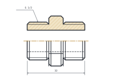
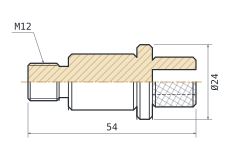
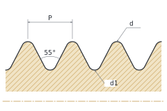
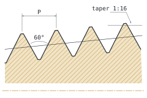

Brass fittings
Fittings made to your drawing or sample: hot-forged or turned from bar, then drilled and threaded.

- Process
- Hot-forged and machined, or turned from bar
- Size range
- Bar Ø5–100 mm · forged bodies 25 g – 1.0 kg
- Tolerance
- ±0.05 mm
- Threads
- BSP (ISO 228-1) · BSPT · NPT · M · UNC/UNF
- Material
- CW617N (forging), CW614N; DZR and lead-free on request
- Finish
- Natural, or plated in our plant: nickel, tin or zinc; silver or chrome on request
- Documents
- EN 10204 3.1 mill certificate, certificate of conformity and final inspection report with every batch; PPAP Level 3 on request · Quality
- Volumes
- From a few thousand pieces to millions a year
Fittings we make
Made to your drawing or sample.

- Pipe fittings: adaptors, nipples, couplings, tees, elbows
- Hose-barb fittings
- Compression fittings
- Pneumatic and airline fittings
- Hydraulic fittings
- Automotive fittings
How fittings are made
- Forged, then machined
- Bodies with side branches (tees, elbows, crosses) are hot-forged near net shape, then drilled and threaded: less material and fewer operations than bar.
- Turned from bar
- Straight connectors, adaptors, nipples and hose barbs are turned on CNC lathes or cam automats.
Buying brass fittings from AirGrip
Can you make fittings for drinking water?
Yes, in dezincification-resistant (DZR) or lead-free brass on request. Approvals such as WRAS, DVGW or NSF/ANSI 61 belong to your finished product; tell us which your drawing calls up.
Lead times, MOQ, NDA and delivery terms: Ordering & shipping.
Related




Send a fitting drawing or sample
Include the thread standard, material (DZR or lead-free if needed) and any pressure-test requirement.